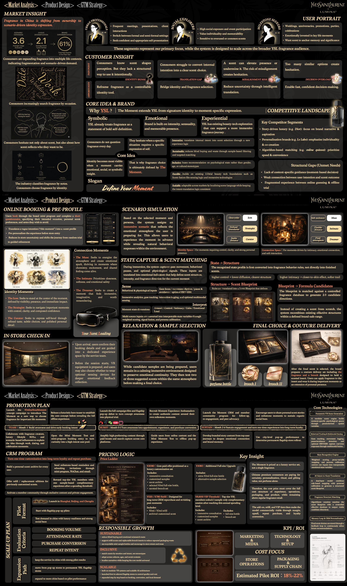

欧莱雅 Brandstorm 是全球知名的品牌商业挑战赛。我作为团队队长和战略核心成员， 围绕YSL高端香氛消费场景，带领团队完成了从市场洞察、创意构思到完整提案的全流程。 我们提出了"The Moment — Define Your Moment"的产品创意方向， 将香氛从"身份符号"升级为"时刻表达工具"，并设计了一套完整的线上线下融合体验链路。
作为团队队长兼战略核心成员，我负责从市场洞察到终版提案的全链路统筹。 在团队缺乏3D建模能力的情况下，我通过AI工具补齐视觉呈现短板， 将抽象策略转化为可感知的产品概念，最终推动方案完整落地。
我主导了前期的市场洞察与用户研究工作。通过社交媒体关键词挖掘、用户访谈和竞品观察， 我发现中国香氛市场正在经历从"所有权驱动"到"场景驱动的身份表达"的结构性转变。 消费者不再单纯追求"拥有一瓶名牌香水"，而是将香氛使用场景扩展到约会、职场、社交等多元生活时刻。 这一洞察成为我们整个方案的战略锚点。
基于市场洞察，我提出"The Moment — Define Your Moment"的核心创意方向： 将香氛从"身份符号"升级为"时刻表达工具"。 我设计了6种"Moment Persona"（The Icon / Strategist / Curator / Muse / Intimate / Dreamer）， 作为香氛匹配的情感框架，让抽象的情绪需求转化为可体验、可传播的产品理念。
我主导设计了从线上预约 → VR场景模拟 → 状态捕捉与香氛匹配 → 放松选择 → 定制交付的完整体验链路。 每个环节都围绕"时刻"这一核心概念展开，考虑了用户的互动感、仪式感与分享价值， 让购买香氛变成一次值得分享的"时刻探索之旅"。
在团队缺乏3D建模能力的情况下，我主动使用AI工具辅助生成产品视觉、场景参考和创意表达素材， 提高方案呈现效率与视觉想象力。这体现了我在资源受限情况下的问题解决能力和工具运用能力， 也让我们的方案在视觉呈现上不输于有专业设计支持的团队。
作为队长，我负责策略、设计、商业化三个模块之间的进度管理与内容整合。 在有限时间内协调多方资源，确保每个模块的质量和进度， 推动项目从市场洞察、产品脑洞到营销路径和终版提案完整落地。
这次商赛让我深刻理解了"策略、创意、执行"三者如何统一。 一个好的营销方案不仅要有洞察支撑的策略，还要有让人眼前一亮的创意， 更需要清晰可落地的执行路径。
在游戏品牌营销中，同样需要这种"从洞察到落地"的全链路思维—— 理解玩家情绪、设计传播内容、选择合适平台和达人，每一步都需要策略驱动。 "The Moment"的核心理念——将产品从功能属性转化为情感载体—— 同样适用于游戏中的英雄认同、皮肤设计、社交关系等营销场景。

以下为方案的完整解析 ↓
中国香氛市场正在经历从"所有权驱动"到"场景驱动的身份表达"的深刻转变。 消费者不再单纯追求"拥有一瓶名牌香水"，而是将香氛使用场景扩展到约会、职场、社交、独处等多元生活时刻。 这揭示了碎片化、场景驱动的需求正在重塑行业格局。
消费者知道气味塑造感知，但缺乏结构化的使用方式；难以将内在意图转化为明确的香氛选择。
气味可以提升存在感或削弱它，错位风险造成犹豫；太多相似选项导致决策过载。
消费者 increasingly search fragrance by occasion，而非传统的香调分类。
消费者犹豫的不仅是气味本身，还有"这瓶香水是否真正反映了我想成为的人"。
我们识别了三大竞争阵营及其结构性空白：
结构性空白：缺乏情境化指导（基于时刻的决策）、用户意图与香氛结果之间的连接薄弱、线上猜测与线下试用之间的体验碎片化。
我们的核心洞察是：身份在承载情感、社会或象征重量的时刻最为清晰可见。 因此，香氛选择不应由品牌定义，也不应由香调分类定义，而应由"那个时刻"定义。
"The Moment" 将YSL从标志性身份延伸到特定时刻的表达。 它重新定义了香氛的底层逻辑：从"我拥有什么香水"转变为"这一刻，我需要什么样的气味来表达自己"。
YSL 早已将香氛视为大胆自我定义的宣言。品牌基因天然契合"身份表达"这一核心命题。
品牌建立在 intensity、感官性和令人难忘的存在感之上，为"时刻化"体验提供了情感基础。
YSL 已有美妆科技探索基础，可以支撑更具沉浸感的香氛旅程，从线上到线下无缝衔接。
我们基于用户在不同场景中的核心需求，设计了6种"时刻人格"，作为香氛匹配的情感框架：
站在时刻中心，通过可见性、存在感和即时影响力定义自我。需要一闻即知的标志性气场。
以控制、清晰和从容自信驾驭重要时刻。需要理性与感性平衡的中性香调。
通过精致品味、微妙选择和打磨的个人细节表达自我。偏好小众、层次丰富的香氛。
激发氛围，创造情感火花，在化学反应与共享活力中蓬勃。需要充满感染力的香气。
优先考虑亲密、柔软和情感安全。偏好温暖、贴肤、不留攻击性的柔和香调。
寻求创造沉浸、富有想象力和值得记住的时刻。需要具有叙事感和画面感的香气。
我们设计了一套从线上预约到线下沉浸再到定制交付的完整体验链路， 每个环节都围绕"时刻"这一核心概念展开，将抽象的情绪需求转化为可体验、可传播的产品旅程。
用户通过YSL品牌小程序完成简短问卷，指定目标场合、个人偏好和想要避免的气味类型。 系统将模糊的意图（如"这个时刻"）转化为初步香氛画像，在到店前就完成个性化准备， 减少店内随机试闻的不确定性，将旅程从"随机尝试"转变为"精准引导"。
基于选定的时刻和人物画像，系统分配一个沉浸式场景，反映用户正在准备进入的情感氛围。 这允许用户提前体验这个时刻，同时揭示自然的行为反应。我们设计了两种体验空间：
在沉浸式体验期间，系统通过多模态传感技术捕捉用户的行为和生理信号：
我们不从零创造一种香，而是让系统在品牌安全范围内重新组合现有嗅觉结构， 既保证了创新，又确保了品牌一致性和生产可行性。
在候选样本准备期间，用户停留在专门设计的平静沉浸式环境中，以保持情绪连续性。 随后在同一氛围中测试2-3个建议香氛，在情绪一致的状态下做出最终选择。
最终选择后，品牌准备一套定制交付套装：
模块化场景引擎构建参数化空间，通过算法根据用户选择的时刻和人物类型生成个性化沉浸式环境。
注视追踪、移动检测、手势识别，以及可选HRV/GSR生理信号，通过多模态融合实现深度状态感知。
加权评分与人物校准，将多源输入转化为可解读的情绪状态变量（唤起/控制/亲密/平静/情感负荷）。
双层次模型结合规则映射与个性化校准，将用户意图转化为结构化香气蓝图。
算法策展将香气蓝图与受控数据库匹配，输出2-3个可行候选方向，而非从零创造。
最终选择通过反馈循环持续存储，结合里程碑时刻与节日推荐，实现长期个性化服务。
发布未来感先导预告，建立核心概念认知；与香氛创作者、生活方式KOL和奢侈品博主合作，通过work、dating、celebration等场景切入，唤起用户对"Define Your Moment"的好奇。
发布完整品牌影片与旗舰店开业；开放Mini Moment测试和小程序预约入口；通过付费推广和搜索覆盖核心平台，将好奇心转化为高意向用户池；引导用户从线上内容到线下体验。
建立Moment CRM与会员社群计划，通过里程碑提醒和推荐深化情感连接与品牌记忆；发展用户生成内容，鼓励分享个人香氛故事；利用城市级快闪活动测试永久旗舰店部署。
将一次性体验转化为长期复购：为每位用户建立个人香氛档案，发送里程碑提醒和再购买邀请； 为顶级YSL会员提供样本补充体验；通过专属内容和私密社群激活会员社区， 让"The Moment"从单次购买变成持续的身份表达旅程。
我们定位为奢侈品服务套装而非单一香水，中国高端消费者愿意为仪式感、个性化和礼品价值付费，而非仅仅为一瓶香水：
试点城市：上海、北京、成都（奢侈品就绪度高、社交氛围强的城市）
扩张路径：从快闪店试点 → 基于booking、转化和本地需求表现评估 → 转向永久YSL旗舰店。 系统采用模块化VR和可扩展AI架构，可根据城市质量与成本逐步扩展，同时保持核心模式的一致性。
可持续增长：减少盲目购买和情感不匹配浪费；支持refill和可重复使用的胸针插件以减少包装浪费； 使用可回收迷你样本瓶并鼓励店内归还和重复使用。包容不同文化、年龄和社会背景， 通过本地化的场景语言保持核心模式的一致性。